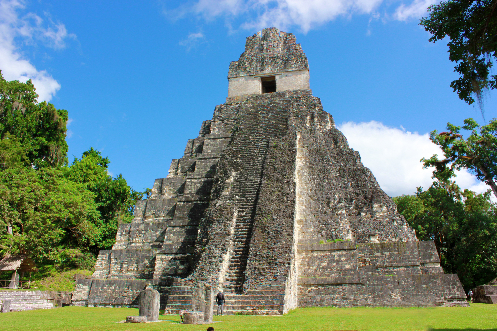

AmericaGo
Guatemala
Guatemala está ubicado en Centroamérica. Consta de 22 departamentos. Es un país con varios tipos de ecosistemas, contando con volcanes, bosques tropicales, manglares y antiguos sitios mayas. Debido a contar con una gran riqueza cultural y natural, el turismo es una de las actividades más importantes del país. Tiene una agradable temperatura de alrededor de 22 grados Celsius. Guatemala tiene una gran cantidad de grupos indígenas que hablan una gran variedad de idiomas, en su mayoría, mayas.
Tikal

El Tikal es un centro arqueológico de la civilización maya. Ubicado en el departamento de Petén. Su nombre maya podría haber sido Yax Mutul. Este sitio presenta una gran secuencia histórica relatada en las antiguas inscripciones que contienen altares y estelas. Curiosamente, también es un lugar de mucho interés para los observadores de aves. Se dice que su población pudo haber sido de 100,000 habitantes organizados en alrededor de 5,000 edificios, de los cuales solo el 5% se encuentra restaurado y habilitado para su reconstrucción.